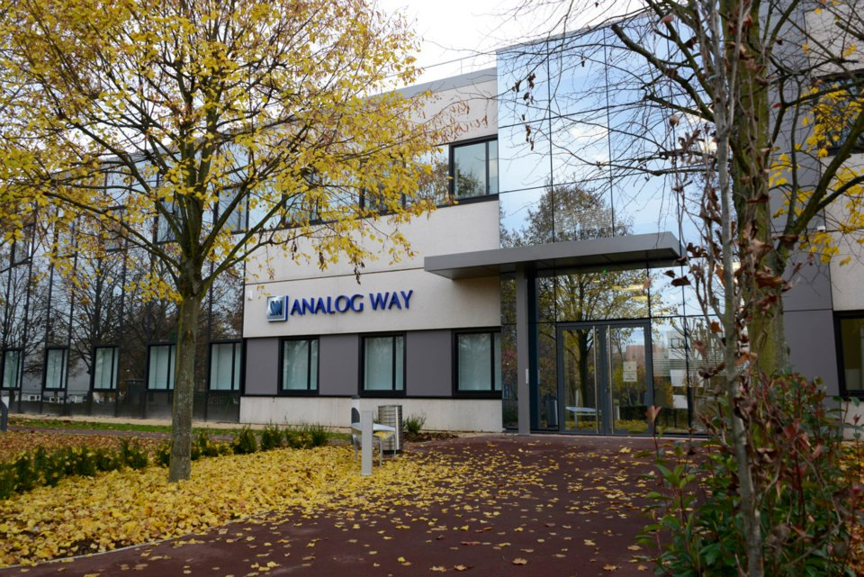
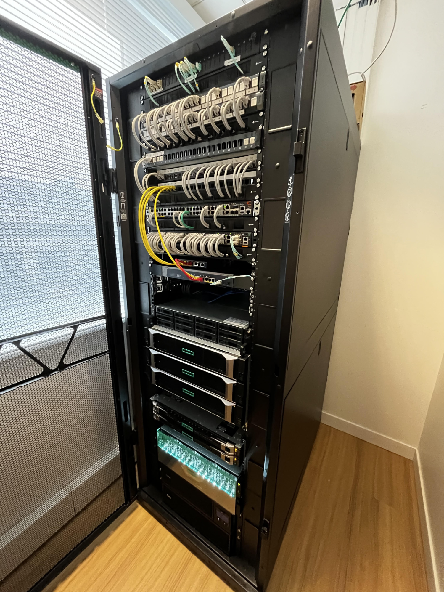
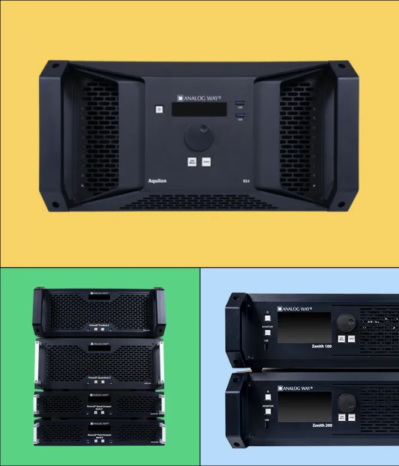
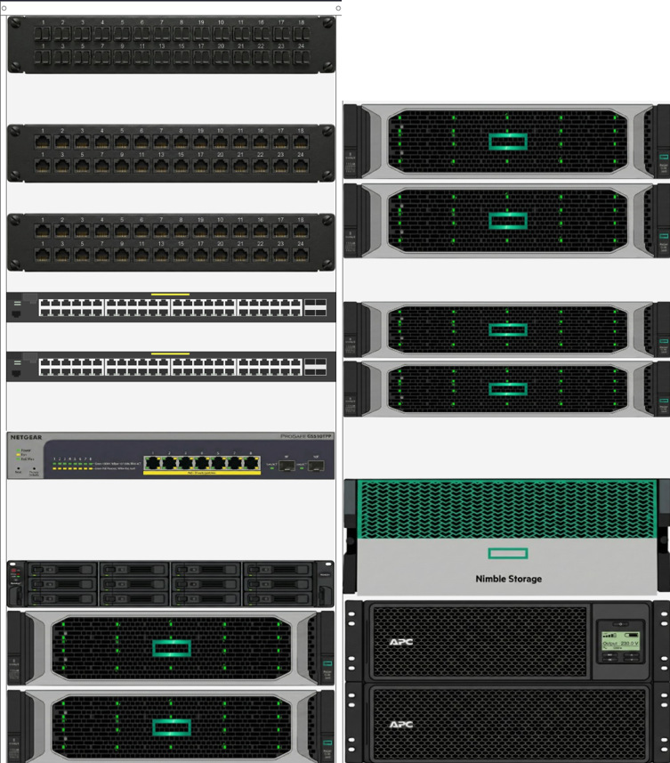
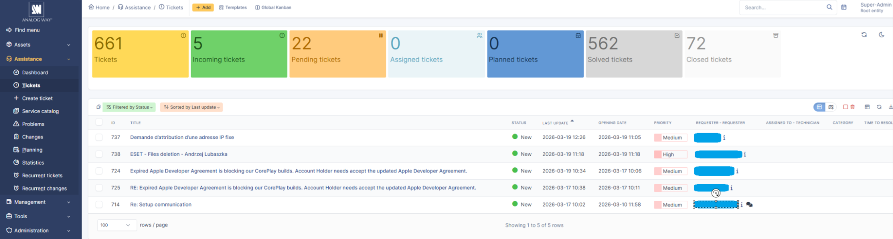
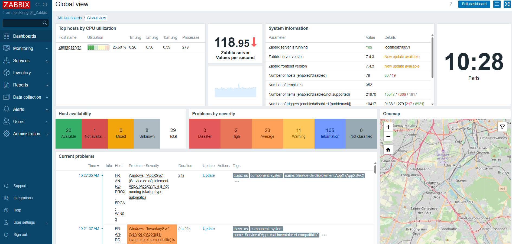

Entreprise spécialisée dans le traitement d'image AV pour l'événementiel, la diffusion et la visualisation professionnelle. Solutions de mixage vidéo multi-écrans utilisées dans les grands événements mondiaux.
d'une PME innovante
Systèmes
Réseau
📁 Dépose tes images dans le dossier images/ avec les noms indiqués ci-dessous, elles s'afficheront automatiquement.






sur Debian 12
Installation et configuration complète d'un serveur relay SMTP sous Debian 12 (Bookworm) permettant à l'infrastructure interne d'envoyer des e-mails via Microsoft 365.
La particularité du projet était la mise en place de l'authentification OAuth2 Microsoft (Modern Auth) à la place des mots de passe classiques, conformément aux nouvelles exigences de sécurité de Microsoft qui a déprécié l'authentification basique pour Exchange Online.
Configuration de Postfix comme agent de transport, intégration avec la bibliothèque SASL, enregistrement d'une application dans Azure AD pour obtenir les tokens OAuth2, et mise en place des certificats TLS pour le chiffrement des échanges.
Microsoft Autopilot (MDM)
Déploiement et configuration de Windows Autopilot pour automatiser la mise en service des nouveaux postes de travail Windows sans intervention manuelle du service informatique.
Le principe : dès qu'un PC est allumé pour la première fois, Autopilot se connecte à Microsoft Intune (MDM), applique automatiquement le profil de configuration de l'entreprise, rejoint le domaine Azure AD, installe les applications métier et configure les paramètres de sécurité — le tout sans que l'informaticien n'ait à toucher physiquement la machine.
Configuration des profils Autopilot dans le portail Intune, enregistrement des machines par leur hash matériel, paramétrage des politiques de conformité et des applications à déployer automatiquement.
Systèmes & Virtualisation
Réseau & Sécurité
| Critère | 🏛 Stage CG77 | 📡 Stage Analog Way |
|---|---|---|
| Secteur | Public (collectivité) | Privé (high-tech / AV) |
| Niveau technique | Initiation / N1–N2 | Avancé / N2–N3 |
| Environnement réseau | LAN administré, VLAN basiques | Infrastructure segmentée complexe |
| Outils clés | GLPI, OpenNMS, AD | Windows Server, AD, Supervision, Firewall |
| Autonomie | Encadré, avec tuteur | Plus grande autonomie |
| Apport principal | Support, ITSM, inventaire | Administration, sécurité, réseau avancé |